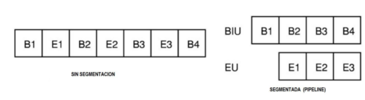
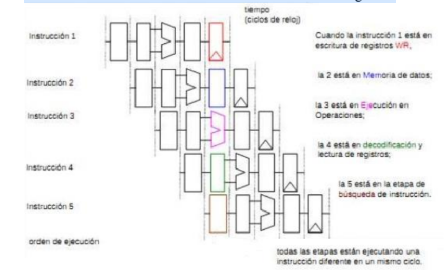

Es una de las tecnologías utilizadas para realizar la segmentación o paralelismo. Divide el procesador, en etapas, procesa una instrucción diferente en cada una y trabaja con varias a la vez. Pueden trabajar de forma paralela, en diferentes instrucciones, utilizando una cola de instrucciones para su comunicación, denominado entubamiento. La dependencia de datos y de control, que tiene como efecto la disminución del rendimiento del pipelining. La segmentación de cauce (pipelining) es una forma efectiva de organizar el hardware del CPU para realizar más de una operación al mismo tiempo. Consiste en descomponer el proceso de ejecución de las instrucciones en fases o etapas que permitan una ejecución simultánea. Explota el paralelismo entre las instrucciones de un flujo secuencial. La segmentación es una técnica de implementación por la cual se solapa la ejecución de múltiples instrucciones. La técnica de implementación clave utilizada para hacer CPU rápidas. La segmentación es como una línea de ensamblaje: cada etapa de la segmentación completa una parte de la instrucción.
Como en una línea de ensamblaje, la acción a realizar en una instrucción se descompone en partes más pequeñas, cada una de las cuales necesita una fracción del tiempo necesario para completar la instrucción completa. Cada uno de estos pasos se define como etapa de la segmentación o segmento. Las etapas están conectadas, cada una a la siguiente, para formar una especie de cauce las instrucciones se entran por un extremo, son procesadas a través de las etapas y salen por el otro. La productividad de la segmentación está determinada por la frecuencia con que una instrucción salga del cauce. Como las etapas están conectadas entre sí, todas las etapas deben estar listas para proceder al mismo tiempo. El tiempo requerido para desplazar una instrucción, un paso, a lo largo del cauce es un ciclo máquina. La duración de un ciclo máquina está determinada por el tiempo que necesita la etapa más lenta (porque todas las etapas progresan a la vez). Con frecuencia, el ciclo máquina es un ciclo de reloj (a veces dos, o raramente más), aunque el reloj puede tener múltiples fases.
La mejora de velocidad debida a la segmentación es igual al número de etapas. La segmentación consigue una reducción en el tiempo de ejecución medio por instrucción. Esta reducción se puede obtener decrementando la duración del ciclo de reloj de la máquina segmentada o disminuyendo el número de ciclos de reloj por instrucción, o haciendo ambas cosas. El mayor impacto está en el número de ciclos de reloj por instrucción, aunque el ciclo de reloj es, con frecuencia, más corto en una máquina segmentada (especialmente en supercomputadores segmentados). La segmentación es una técnica de implementación, que explota el paralelismo entre las instrucciones de un flujo secuencial. Tiene la ventaja sustancial que, de forma distinta a algunas técnicas de aumento de velocidad, no es visible al programador.
Tipos de cauces: Unifunción: ejecutan un único proceso. Multifunción: pueden ejecutar varios procesos: Estáticos: en un instante determinado sólo pueden ejecutar uno. Dinámicos: pueden ejecutar simultáneamente varios procesos. Lineal: a cada etapa sólo le puede seguir otra etapa concreta. No lineal: se pueden establecer recorridos complejos de las etapas. Ciclos de Instrucción. Ejecución de instrucciones en 5 ciclos
Etapas de cauce. Donde: IF: Búsqueda de una instrucción de la memoria. ID: Búsqueda de registros y decodificación de instrucciones EXE: Ejecución o cálculo de dirección MEM: Acceso a la memoria de datos. WB: Escribir datos en el archivo de registros
La segmentación ayuda en la realización de una carga de trabajo. Realiza múltiples tareas simultáneamente utilizando diferentes recursos. La velocidad se incrementa si se aumenta el número de segmentos. La razón de segmentación está dada por el segmento más lento. El tiempo en llenar y vaciar los segmentos reduce la velocidad. Dedica unidades específicas del procesador a cada una de las partes del ciclo de instrucción y ejecutarlas paralelamente. Mejora dramáticamente el rendimiento debido a que en los procesadores tienen etapas en el ciclo de instrucción. La unidad de control se subdivide en dos o más unidades funcionales, cada una encargada de llevar a cabo una parte del ciclo de instrucción. Se comunican a través de una cola de instrucciones (Pipeline).